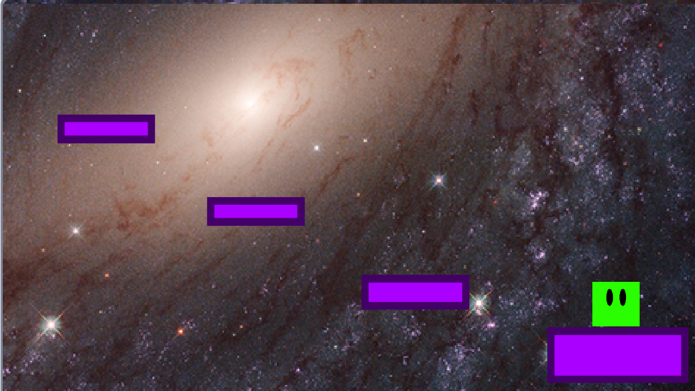

Manó Platformer
Rövid Ismertető
 A Manó platformer egy izgalmas játék, amelyben egy zöld manót irányítasz a galaxis közepén található feketelyuk felé. Célod az idő visszaforgatása és bolygód megmentése egy veszélyes aszteroida ütközésétől. A játékban számos kihívással teli pályán kell ugrálnod és akadályokat legyőznöd. A pályák lila színű platformokkal vannak teli, amiken a manó ugrálhat, és ezeken keresztül haladhat előre. Azonban ügyelj, mert a piros színű platformok veszélyt jelentenek! Ha a manód ráugrik rájuk, az azonnal megöli őt, így ügyesen kell navigálnod azok között, hogy életben maradj. A játékban három nehézségi fokozat áll rendelkezésedre. Attól függően, hogy melyiket választod, 5, 3 vagy 1 életed lesz. A nehézségi szint emelkedésével az akadályok és a veszélyek is nehezebbé válnak, így kihívást jelentenek az ügyességi ugrások és a megfelelő időzítés. A Manó platformer egyszerű grafikával rendelkezik, amely hozzájárul a játék szórakoztató hangulatához. A letisztult vizuális stílus lehetővé teszi, hogy a játékmenetre koncentrálj, miközben élvezed a manó kalandjait a színes, ám minimalista világban. Indulj el a Manó platformer világában, és használd az ugrásaidat, ügyességedet és időzítésedet ahhoz, hogy eljuss a feketelyukhoz, visszaforgasd az időt és megmentsd bolygódat az aszteroida pusztításától!
Vélemények
Z50Enjoyer
Fincsa mincsa (jó az íze)
FlorianGaming
Élvezhető a játék, tetszik hogy ingyenes de sajnos le kell tölteni hozzá a Karmolás GameEngine-t. Ha egyszer lesz TengerCápa remake akkor azzal is játszani fogok.
SanyiFromScratch
Nagyon jó játék, többször is kijátszottam. Az irányítás lehetne WASD de minden más nagyon tetszett. Nagyon szép grafika, jó level design. 10/10
Letöltés
Mivel a Manó Platformer ingyenesen játszható ezért erről az oldalról is letölthető. Fontos hogy telepíteni kell mellé a Karmolás 3-at és azzal megnyitni.
Vissza a tetejére